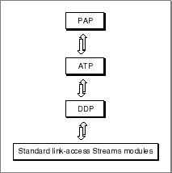

About PAP
The Printer Access Protocol (PAP) is an asymmetrical connection-oriented transactionless protocol that enables communication between client and server endpoints, allowing multiple connections at both ends. PAP uses ATP packets to transport the data once a connection is open to the server.PAP is the protocol that ImageWriter and LaserWriter printers in the AppleTalk environment use for printing. You use PAP when the workstation sends a print job directly to a printer connected to the network or when you send it to a print spooler, which in turn uses PAP to send it to the printer. Open Transport PAP provides a single protocol implementation that is integrated into the AppleTalk protocol stack.
Figure 18-1 shows how a PAP endpoint provider encompasses its underlying delivery protocol and link-access STREAMS modules.
Figure 18-1 The PAP endpoint provider's underlying delivery mechanism

One of the unique features of PAP is its ability to determine which connection request to honor when there are several requests outstanding at the same time. At any time a PAP server endpoint can receive requests to open a connection from different client endpoints. For example, a printer server is available on a network to many workstations, several of which can send data to the printer at any time. PAP uses an arbitration scheme to allow a server to accept a connection with the workstation that has been waiting the longest for a connection. The scheme works this way:
For additional information, see "Printer Access Protocol" in Inside AppleTalk.
- A PAP server receives a connection request but delays granting it for a predefined length of time (nominally 2 seconds). This default time period is implementation specific and is defined in Inside AppleTalk, second edition.
- The PAP server accumulates any additional connection requests that come in from other endpoints during that time period.
- At end of the time period, the PAP server obtains the wait time from each workstation endpoint requesting a connection. The workstations track the amount of elapsed time spent waiting for access to the server. For example, if a workstation client has to try several times to connect to a busy LaserWriter, the workstation continues to track the total time since the first connection attempt and reports that amount to the LaserWriter on every subsequent connection attempt.
- The PAP server then grants the request of the workstation that has waited the longest.